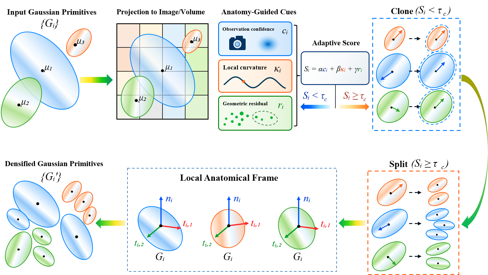
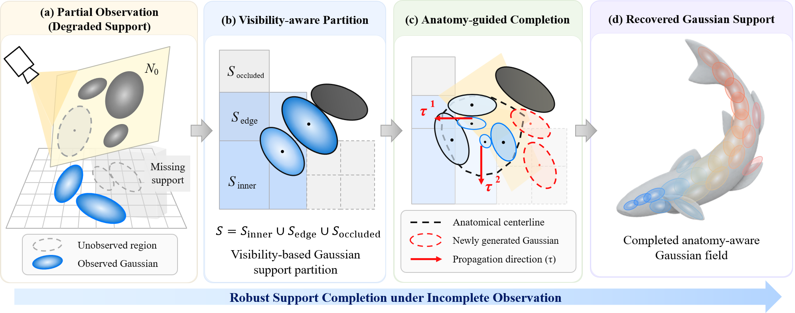
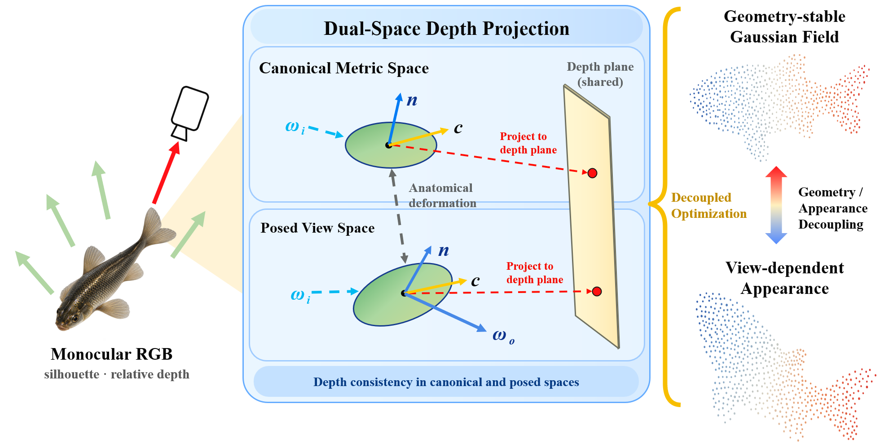
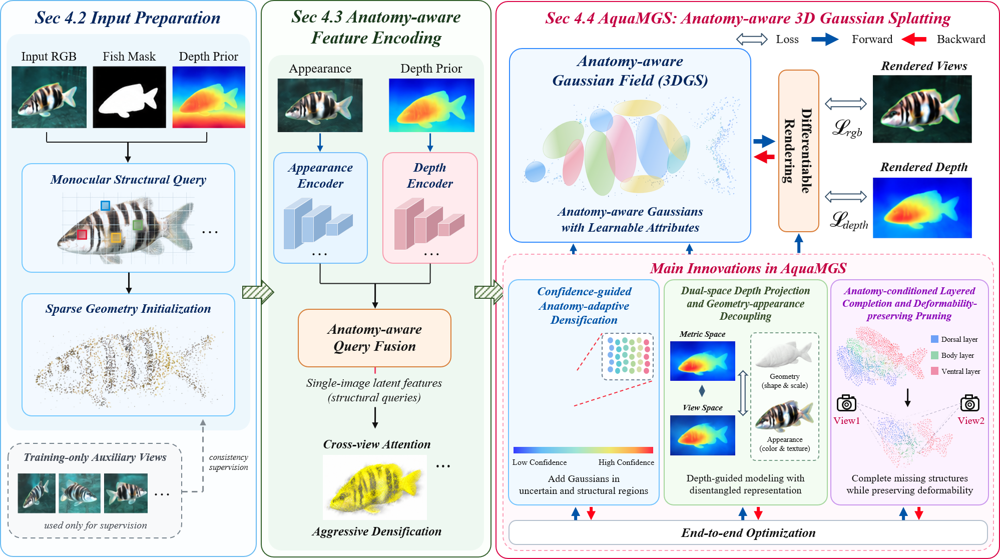

Three-dimensional reconstruction of aquatic organisms supports morphological analysis, behavioral interpretation, and digital ecological modeling. Deformable organisms such as fish exhibit continuous body bending, undulation, and substantial pose variation, while monocular underwater observations provide incomplete geometric evidence under occlusion, turbidity, and uneven illumination. We propose AquaMGS, a monocular 3D reconstruction and novel-view synthesis framework that integrates structural priors with an explicit Gaussian representation field. Fish-centric 3D query lifting maps RGB appearance, silhouette, relative-depth, and confidence cues into a body-normalized spatial representation. A continuous deformable anatomy module then couples a learnable cubic B-spline centerline with an anatomy-attached deformation graph to model longitudinal deformation and canonical-to-posed correspondence. The recovered anatomy subsequently guides Gaussian optimization through confidence-aware primitive allocation, dual-space depth projection, layered completion, and deformability-preserving pruning. Experiments on the FURA dataset and independent cross-dataset evaluations show stable geometry recovery under pose variation, partial occlusion, and small-scale observations. On FURA, AquaMGS achieves an NCD of 0.029, PSNR of 20.73 dB, and SSIM of 0.814, while maintaining coherent anatomical structure across novel viewpoints.
|
In summary, this work makes the following contributions:
|
|
The lead panel above presents the primary fish reconstruction demo. A second complementary video is provided below to show an additional visualization sequence.
Demo 1. Primary fish reconstruction showcase video.
Demo 2. Additional fish visualization sequence.
Demo 3. Anatomical detail visualization.
Anatomical detail visualization highlighting reconstructed fish structures, including fins, caudal region, scales, and head landmarks.
The following panels are the original method figures from the manuscript. Transparent regions have been displayed on a white background for webpage presentation.

Confidence-guided anatomy-adaptive densification projects Gaussian primitives to image and volume space, measures observation confidence, local curvature, and geometric residual, and applies adaptive cloning or splitting in a local anatomical frame.

Anatomy-guided completion partitions Gaussian support into visible and degraded regions, then propagates support along anatomical directions to recover missing structures while preserving deformability.

Dual-space depth projection decouples canonical metric geometry from view-dependent appearance by enforcing depth consistency in both canonical and posed spaces using a shared depth plane.

The complete AquaMGS pipeline integrates input preparation, anatomy-aware feature encoding, Gaussian-field optimization, differentiable rendering, and the key innovation modules into an end-to-end monocular reconstruction framework.
AquaMGS connects monocular 3D query reasoning, continuous anatomical representation, and anatomy-aware Gaussian Splatting for deformable aquatic organisms. Anatomical coordinates and deformation graphs maintain correspondence between canonical and posed geometry, while confidence, geometric supervision, completion, and pruning regulate the Gaussian field under incomplete observations. The resulting representation supports fish-centered geometry recovery and novel-view synthesis across substantial changes in pose, curvature, visibility, and viewpoint.
@article{xing2026aquamgs,
author = {Xuanwei Xing and Mengzhen Xu and Yuan Xue and Yongxian Zhang},
title = {Structure Guided Gaussian Splatting for Monocular Reconstruction of Deformable Aquatic Organisms},
year = {2026},
note = {Manuscript}
}@article{kerbl2023gaussians,
author = {Kerbl, Bernhard and Kopanas, Georgios and Leimk{"u}hler, Thomas and Drettakis, George},
title = {3D Gaussian Splatting for Real-Time Radiance Field Rendering},
journal = {ACM Transactions on Graphics},
volume = {42},
number = {4},
year = {2023}
}